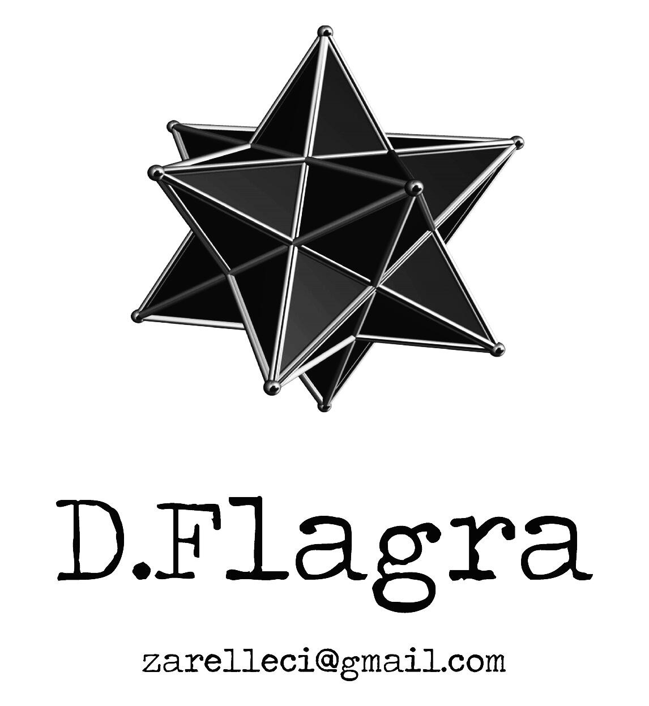

Edicões D.Flagra - (desde Maio de 2005)
Edicão e Banca de revistas, fanzines e livros

Projecto Multidisciplinar
Blog [Poesia em Loop]: Com poesia de autores, na sua maioria, de expressão portuguesa.
Programa [Poesia em Loop] na Rádio (online) Paralelo: Quartas 21h/23h, Sonoplastia Poético-Delinquente por DJMutante.
Livro [Poesia em Loop] por Nunes Zarel•leci (72 Pág., brochado, dimensões de 6"X4", Edicões D.Flagra, Abril 2024): Poesia com os versos escritos em loop.
Vídeo-Poemas [Poesia em Loop]: em que as animacões visuais, de música e versos em legenda são em loop.
DJ Set [Poesia em Loop]: Com instrumentais, versões MIDI e poesias sampladas por DJMutante.
Historial de [Poesia Em Loop]
Dez. 2016- Apresentacão de Vídeo-Poemas [Poesia Em Loop] no Zinefest II no C.C.Cedofeita (Porto)
Set. 2017 – Apresentacão do Livro/Fanzine [Poesia Em Loop] na loja Atelier 3|3 (Porto)
Out. 2017 – Apresentacão de Vídeo-Poemas [Poesia Em Loop] na Comunidade Rés-Da-Rua (Porto)
Fev. 2018 - Apresentacão de Vídeo-Poemas [Poesia Em Loop] na Livraria-Bar Gato Vadio (Porto)
Mar. 2018 - Apresentacão de Vídeo-Poemas [Poesia Em Loop] na Ass. CAIS (Porto)
Abr. 2019 - Apresentacão de Vídeo-Poemas [Poesia Em Loop] na Ass. OKNA (Porto)
Set. 2019 - Apresentacão de Vídeo-Poemas [Poesia Em Loop] no Bar Pony (Porto)
Out. 2019 - Apresentacão de Vídeo-Poemas [Poesia Em Loop] + DJMutante na Ass. Portal 33 (Porto)
Nov. 2019 – Sessão DJMutante com o set [Poesia Em Loop] na Ass. Open Box (Porto)
Fev. 2020 - Nunes Zarel•leci apresenta cOBRA e Vídeo-Poemas [Poesia Em Loop] na Ass. Macaréu (Porto)
Jul. 2021 - Apresentacão de Vídeo-Poemas [Poesia Em Loop] + VJMutante Set no Pinguim Café (Porto)
Dez. 2021 – Sessão DJMutante com o set [Poesia Em Loop] no espaco Liceiras 18 (Porto)
Mai. 2022 - Apresentacão de Vídeo-Poemas [Poesia Em Loop] durante a Exposicão Obra D.Flagra no C.C.Cedofeita (Porto)
Abr. 2023 - Lancamento do Livro [Poesia Em Loop] e Vídeo-Poemas [Poesia Em Loop] na Livraria-Bar Gato Vadio (Porto)
Abr. 2023 - Apresentacão do Livro [Poesia Em Loop] e Vídeo-Poemas no Café Amizade (Aveiro)
Jul. 2023 - Apresentacão do Livro [Poesia Em Loop] e Vídeo-Poemas na Livraria Poetria (Porto)
Jul. 2023 - Apresentacão do Livro [Poesia Em Loop] e Vídeo-Poemas na Ass. Espaco Musas (Porto)
Set. 2023 - Apresentacão do Livro [Poesia Em Loop] e Vídeo-Poemas no Espaco Maldatesta (Porto)
Out. 2023 - Apresentacão do Livro [Poesia Em Loop], Vídeo-Poemas e sessão DJMutante no Atelier Logicofobista (Porto)
Mar. 2024 - Apresentacão do Livro [Poesia Em Loop] e Vídeo-Poemas na Casa das Artes Meia Volta de Urano (Cacilhas/Lisboa)
Mar. 2024 - Apresentacão do Livro [Poesia Em Loop] e Vídeo-Poemas na Casa do Artista Amador (Louro/Famalicão)
Abr. 2024 - Apresentacão do Livro [Poesia Em Loop] e Vídeo-Poemas na Cafetaria Viriato (Porto)
Jul. 2024 – Residência Artística [Poesia em Loop] no festival Zona Autónoma (Canedo/St. Maria da Feira)
Set. 2025 - Apresentacão do Livro [Poesia Em Loop], Vídeo-Poemas e sessão DJMutante na Ass. Observalicia (Braga)
Nov. 2025 - Apresentacão do Livro [Poesia Em Loop], Vídeo-Poemas e sessão DJMutante na Livraria Trama (Porto)